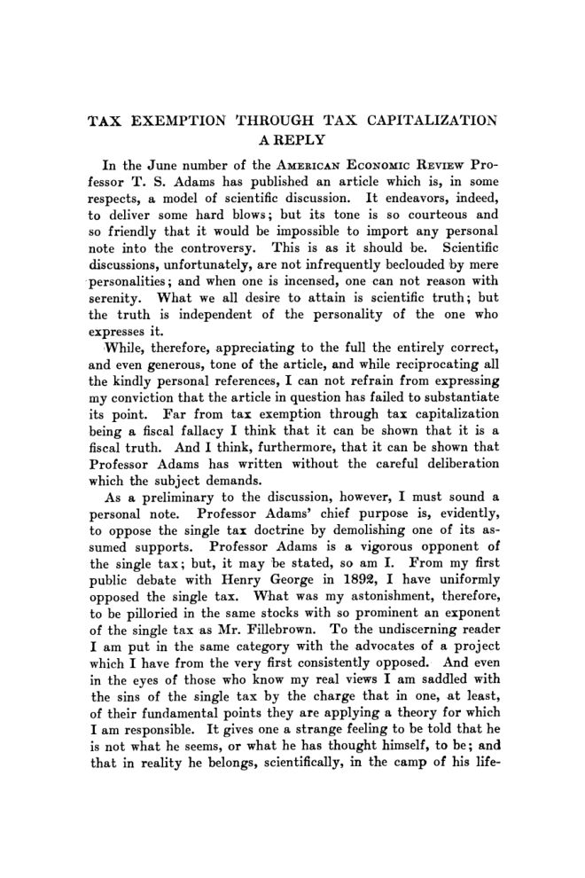

Seligman, 1916: o comprador de um bem tributado paga o imposto?
Leitura: 8 min
Edwin R. A. Seligman responde a T. S. Adams: a capitalização do imposto no preço dos bens seria uma verdade fiscal, e o erro dos defensores do imposto único estaria em aplicá-la à terra.


Edwin R. A. Seligman debatera em público com Henry George pela primeira vez em 1892 e, desde então, sempre se opusera ao imposto único sobre a terra. Em junho de 1916, viu-se posto, como ele diz, no mesmo tronco de castigo de um dos principais defensores desse imposto, Fillebrown. O responsável era T. S. Adams, que, num artigo da American Economic Review, atacara a teoria da isenção pela capitalização do imposto, de que Seligman era o principal expositor, e a associara aos argumentos do imposto único.
A resposta, publicada no número de dezembro de 1916, elogia o tom cortês do adversário e passa logo ao ataque. Seligman, da Columbia University, sustenta que a isenção pela capitalização, longe de ser uma falácia fiscal, é uma verdade fiscal, e que Adams escreveu sem a deliberação que o tema exigia.
Onde está o erro dos defensores do imposto único?
Seligman divide o artigo de Adams em três partes: a crítica geral à teoria, aplicada aos títulos de empresas; a tese de que ela também não vale para a terra; e o argumento sobre a difusão do incremento não ganho, a valorização que o dono recebe sem esforço próprio. Começa pela terra, onde concorda com a conclusão de Adams, mas não com as razões.
O raciocínio dos defensores do imposto único teria uma premissa maior verdadeira, a capitalização, e uma premissa menor falsa: a de que os atuais donos de terra compraram livres do imposto. Muitos deles, diz Seligman, já eram donos antes de os impostos atuais serem criados ou aumentados. O programa só seria um imposto sem ônus se três condições valessem: que fosse de fato o único imposto, que a taxa exata e permanente fosse anunciada com antecedência e que fosse cobrado apenas de quem comprasse depois. Sem elas, o plano significaria um imposto pesado sobre a massa dos donos atuais, razão pela qual, segundo ele, foi derrotado em Nova York.
“Fizeram um uso ilegítimo de uma teoria correta.” (“they have made an illegitimate use of a correct theory”)
Seligman acrescenta um testemunho pessoal. O relatório da maioria do Comitê de Tributação do prefeito de Nova York, que Adams criticara por não responder à teoria do encargo fixo sobre a terra, fora redigido por ele, e o tema não foi discutido porque mal aparecera nas audiências.
O imposto antigo ou o novo?
Adams afirmara que a legitimidade de um novo imposto depende de ele ser geral ou exclusivo. Seligman responde que depende do imposto antigo. Suponha-se que uma classe de bens já pague um imposto exclusivo. Se a capitalização for falsa, os donos ainda carregam esse ônus, e incluí-los num novo imposto geral seria dupla tributação. Se for verdadeira, os compradores posteriores estão livres do imposto antigo, e o novo imposto geral os atinge apenas uma vez, como a todos.
Os exemplos vêm da prática fiscal. A Itália isentou a terra do novo imposto de renda por já estar sujeita a um imposto especial; um financista de Nova York usou o mesmo argumento no debate sobre um imposto de renda proposto; outros países, como os Estados Unidos, não fizeram a exceção. Seligman cita a estimativa de que, nas cidades americanas, a terra muda de mãos em média a cada vinte anos, e lembra que os títulos mudam de dono ainda mais depressa: quanto mais antigo o imposto, menos donos originais restam.
Os impostos reduzem a taxa de juros?
O núcleo da tese de Adams era que o comprador não escapa do imposto porque o paga por meio de uma taxa de juros mais baixa, que registraria automaticamente a carga média dos impostos. Seligman considera a proposição nova e importante, se verdadeira, e a examina com o exemplo de um imposto especial sobre os títulos da Steel Corporation.
Se o imposto for transferido ao consumidor, o aço fica mais caro; a produção menor pode reduzir a demanda por capital e baixar os juros, mas a poupança menor reduz a oferta de capital e tende a elevá-los. O efeito é incerto. Se não for transferido, só quando os lucros caem a ponto de reduzir a produção haveria alguma pressão para baixo. E grande parte do capital está em terra, cujos impostos com frequência não se transferem. A conclusão de Seligman é que a tendência existe, mas é excepcional, muitas vezes compensada e, mesmo quando ocorre, pequena demais para contar.
Capitalização é o mesmo que equalização?
A teoria da capitalização, diz Seligman, é apenas uma extensão da teoria do valor: quem compra um bem durável paga o valor capitalizado da renda anual esperada, e um imposto permanente é uma das saídas que se deduzem para chegar a essa renda. Quando Adams escreve que os compradores de bens tributados ficam em pé de igualdade com os de bens isentos, e que não há isenção, mas equalização pela concorrência, estaria dizendo a mesma coisa com outras palavras.
“O capital é renda capitalizada.” (“Capital is capitalized income.”)
O ponto mais citado da réplica é a frase de Adams segundo a qual o comprador posterior se livra de qualquer excesso de imposto acima da taxa média. Para Seligman, basta trocar taxa média por campo livre de impostos e tem-se a própria teoria. O comprador se livra de um imposto especial, acima do geral; e, no caso inverso, quem compra um título isento do imposto de renda federal paga mais por ele e, na prática, perde a isenção.
O que dizia o mercado de títulos?
Na discussão em Washington sobre substituir a retenção na fonte pela informação na fonte no imposto de renda, vários memoriais trataram a capitalização como fato corrente. Um advogado dos banqueiros de investimento escreveu que a cláusula de isenção representava a capitalização do imposto; o First National Bank of Chicago apresentou as diferenças de preço entre títulos isentos e não isentos desde a lei. Seligman conclui que quem contesta a doutrina tem contra si os especialistas do mercado.
E o incremento não ganho?
Na última parte, Seligman questiona a difusão do incremento não ganho. Se os pioneiros não obtêm o salário corrente em suas fazendas, isso indicaria trabalho e capital mal dirigidos, uma perda social a pôr do outro lado da balança. Duvida que fabricantes tratem a terra como especulação e acha que a compra de toda a terra pelo Estado envolveria a eficiência da administração pública. Fecha com seis acusações, entre elas a de ter atacado a premissa maior em vez da menor, confundido impostos novos e antigos e ignorado o mercado de títulos.
Na minha leitura
Na minha leitura, a controvérsia é sobre onde o imposto aparece no preço. Seligman olha para o ativo: um imposto específico e permanente reduz o preço do bem tributado, e quem compra depois recebe o retorno normal sobre o que pagou. Adams olhava para o mercado de capitais como um todo: se todos os ativos são tributados, a taxa de retorno de todos cai. As duas coisas podem ser verdadeiras ao mesmo tempo, uma para impostos exclusivos e outra para impostos gerais, e boa parte da réplica consiste em separar esses dois casos.
A distinção entre o dono original e o comprador posterior é o ponto que mais rende. Ela explica por que um imposto antigo pode parecer não pesar sobre ninguém e por que um imposto novo e alto sobre um ativo funciona como uma perda única para quem o possui no dia do anúncio. É esse o argumento que Seligman usa contra o imposto único: a teoria que o justificaria só funciona para quem ainda não comprou.
Glossário
- Capitalização do imposto
- redução do preço de um bem no valor presente de um imposto permanente que recai sobre ele.
- Imposto exclusivo
- imposto que recai só sobre uma classe de bens ou de rendas.
- Imposto geral
- imposto que recai sobre todos os bens ou todas as rendas.
- Imposto único (single tax)
- programa associado a Henry George de financiar o governo pela renda da terra.
- Incremento não ganho
- valorização de um bem, sobretudo a terra, que não resulta de esforço do dono.
- Translação (shifting)
- passagem do ônus de um imposto a outra pessoa por meio dos preços.
- Título isento
- título cujos juros não pagam determinado imposto, como o de renda.
- Retenção na fonte
- cobrança do imposto por quem paga a renda, antes de entregá-la ao beneficiário.
Fontes
- Tax Exemption Through Tax Capitalization: A Reply — Edwin R. A. Seligman (Columbia University) (pp. 790–807). JSTOR · Internet Archive (PDF)
- Edição completa, com os demais artigos: Nº 144 do Arquivo.
Documento em domínio público (EUA, publicado antes de 1931), via JSTOR Early Journal Content e Internet Archive. Resumo e comentário do autor deste site, sem afiliação com a American Economic Association. Encontrou um erro? Escreva: a correção é publicada no próprio texto, com data.
← Persons, 1916: como montar um barômetro dos negócios ↑ Nº 144 · Um barômetro dos negócios, a capitalização do imposto e o crédito rural